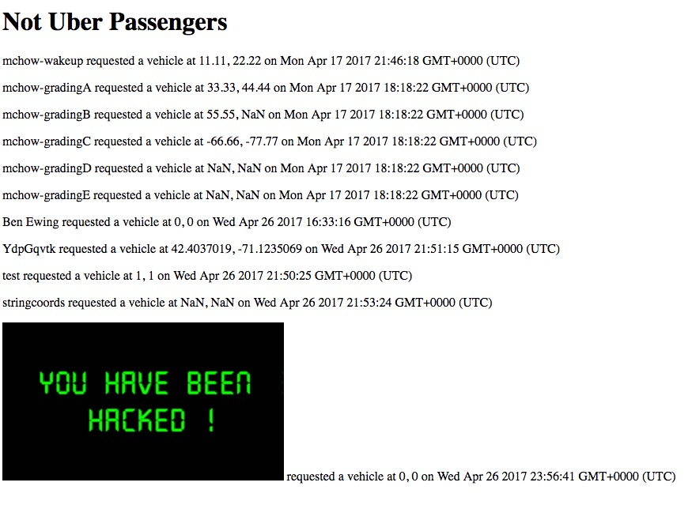
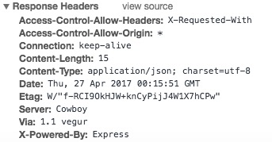

Security Evaluation
Introduction
I am looking for security flaws within the Black Car Service. This is a website that accesses a database to pair passengers with vehicles. I have been tasked with looking for flaws within this program.
Methodology
One tool I used was curl. I tried altering the formats of the arguments in the POST request. This allowed me to use cross site scripting by inserting code into the database. I also analyzed response headers.
Abstract of Findings
One vulnerability I found was that the username in the database has no restrictions. This means that it can include code that threatens the integrity of the website. Additionally, the security settings allow anyone to access the data from any website, rather than only specified site on which the database is meant to be used.
Issues Found
- Cross Site Scripting: Using curl, I inserted html code as the username for a passenger. This caused errors within the html page loaded by https://limitless-forest-92610.herokuapp.com/. I was able to insert an image into this page by creating a passenger whose username was a link. This is a very significant error, as it allows people to alter the code within the page, and it could also be used to insert javascript instead of an image. This javascript could be used to access users' passwords and other information (if anything important were stored in the database). To prevent this problem, symbols should not be allowed in the username. This way, when the username is received via /submit, all symbols should be removed, or the username should simply not be accepted if it contains symbols. The following picture shows the image I was able to insert into the webpage:

- Cross Origin Resource Sharign: The Access-Control-Allow-Origin in the response header for /submit is set to '*'. This means that scripts from any site can access the POST feature. This is a minor issue in this assignment, but if the service were to be used by many people and contained important information, this would pose a serious threat. I noticed this in the code, and then checked the response header to find the same problem. This could be fixed by setting a more specific URI, rather than the "wild card" '*', so that the script could only be hosted on certain sites (i.e. the car service). This picture shows this error as found in the response header:

Conclusion
I was able to find several vulnerabilities within this program. The database was rather insecure, although it could have been made significantly more so with some modifications. Overall, I learned how insecure the web can be without taking proper precautions. While coding assignment 3, I didn't even consider these problems. But, when taking the time to look for them and consider consequences, I am much more wary. This made me realize how important it is to consider security when working on projects that deal with private information.
References:
{kind=link}